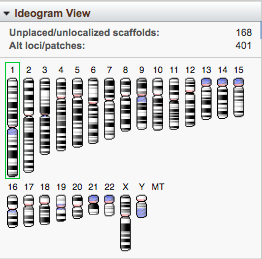
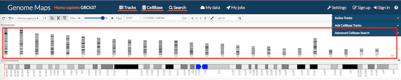

Cariograma

Cariograma/Ideograma del Genome Data
Viewer
Contexto:
-
A partir de los datos de la secuencia genética del ADN de una especie, el investigador quiere identificar visualmente la organización cromosómica. Los cromosomas funcionan como estructuras de organización de alto nivel sobre la cual se organizan las estructuras genéticas más detalladas (genes y variaciones).
Problema:
-
Representar el conjunto de cromosomas de una especie.
Solución:
-
Presentar un mapa citogenético o cardiograma que consiste en la representación gráfica del conjunto ordenado de cromosomas de la especie en estudio.
-
Los cromosomas deben estar ordenados por:
-
número (el número de cromosomas depende de la especie),
-
forma (su disposición respecto al centrómero del cromosoma) y
-
tamaño (desde los más grandes a las más pequeños).
-
La alineación de los cromosomas está dada respecto al centrómero, con el brazo largo ("q") hacia abajo y el brazo corto (“p”) hacia arriba. Si la especie representada contiene cromosomas sexuales, estos se colocan al final de la lista ordenada.
-
El patrón Ideograma aplicado a este patrón, permite reconocer los cromosomas dentro del conjunto.
Estructura:

Cuando:
-
USE CUANDO se requiere localizar elementos genéticos (variaciones, genes, etc) en los cromosomas.
-
USE CUANDO se requiere identificar el cromosoma al cual pertenece una variación o gen de la secuencia genética.
-
USE CUANDO se requiere identificar el espacio de secuencia genética que se quiere explorar.
Por Qué:
-
El cariograma es una representación gráfica del conjunto de cromosomas de una especie. Esta representación es independiente de la especie, sin embargo, el número de cromosomas representado depende de cada especie.
-
El cariograma es una representación de uso común en el ámbito genético, especialmente por los profesionales que realizan cariotipos, pruebas para identificar anomalías cromosómicas como causa de malformaciones o de enfermedad. La representación gráfica del cariotipo es el cardiograma.
-
El cariotipo y su nomenclatura (provista por International System for Human Cytogenetics Nomenclatura (ISCN)) se convierte en un lenguaje estándar para los investigadores en el área genómica.
-
Este patrón, junto con los tracks se convierte en un mecanismo Overview plus Detail que facilita la navegación por la secuencia genética.
-
Este patrón permite localizar los elementos genéticos a través de una nomenclatura estándar (Cromosoma-Brazo-Región-Banda-subbanda-sub sub banda).
-
La organización de los datos respecto al cromosoma facilita la organización de los datos y la navegación.
Ejemplos:
La figura 1 muestra el patrón cariograma representando, en una sola fila, los 46 cromosomas de la especie
humana: 22 pares de cromosomas autosómicos y un par de cromosomas sexuales ( XX para el sexo femenino o XY
para
el sexo masculino.

fig 1. Cardiograma con Ideograma de Genome
Maps
La figura 2 presenta el cariograma del ratón. Note que existen más opciones
para
mostrar el cariograma de otras especies.

Fig 2. Cariograma de aplicación G-compass
Otros ejemplos se puede encontrar en las aplicaciones:
Glosario
Cromátida.- Las
dos cadenas paralelas de cromatina conectadas en el centrómero que constituyen el cromosoma después de
la replicación del ADN.[3]
Centrómero.- Lugar o punto
en
que se unen las fibras del huso acromático con el cromosoma en la metafase; para que en la anfase los
cromosomas sean conducidos hacia los polos. En cromosomas normales, la posición del centrómero siempre es la
misma y puede, por su localización, formar dos brazos iguales o dos brazos desiguales en cada cromosoma. Al
centrómero también se le designa cinetócoro [2].
Bibliografía
[1] Oliva,
Rafael, et al. Genética
médica.
Vol. 39. Edicions Universitat Barcelona, 2013.
[2]
Glosario de la Alicante.
[3]
Glosario
Instituo Roche